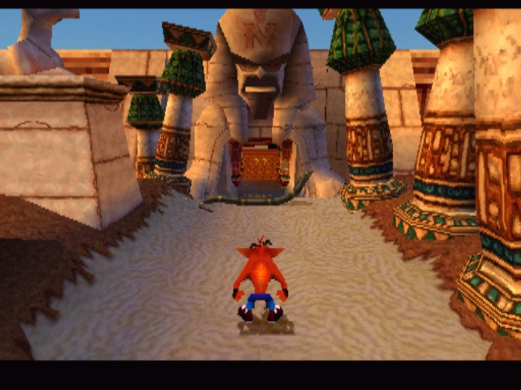

Benoit
 Les internets s’enflammaient ce week-end autour d’un probable retour de la franchise Crash Bandicoot. À l’origine de cette rumeur, un tweet posté par le compte officiel de PlayStation au Moyen-Orient suivi quelques jours plus tard d’une déclaration d’un fabricant de jouets indiquant que son entreprise planchait en ce moment même sur la création de plusieurs séries de figurines dédiées aux licences PlayStation, dont une pour la série Crash Bandicoot. Si certains y ont vu la preuve officielle du retour du marsupial orange, il n’aura pas fallu attendre bien longtemps pour voir la rumeur être démentie. Si ce week-end Randy Fark, représentant du fabricant de jouets NECA se déclarait ravi du retour de la saga sur nos consoles, il est revenu sur ses déclarations ce matin même dans les colonnes de GameSpot. L’homme y déclare avoir été floué par un fake circulant en ligne depuis quelques temps (l'image ci-dessous en l'occurrence). Ce faux Crash Bandicoot Returns lui aurait fait miroiter ce fameux retour de la série sur le devant de la scène et enthousiasmé au point de déclarer vouloir produire une série de figurines autour du personnage. S’il est toujours envisageable de voir en ce démenti le rattrapage in-extremis d’une fuite réelle, Crash Bandicoot n’est pour le moment pas à l’ordre du jour chez Naughty Dog. Débutée en 1996 sur PlayStation 1, la saga Crash Bandicoot n’a pas connu de nouvelle sortie depuis Crash : Génération Mutant sorti en 2008.
Source : Grand Benoit tout puissant
Juju
Rendez-vous compte de l'ampleur du phénomène : 12 millions de jeux se sont vendus au Japon depuis 1996, raz de marée qui s'est confirmé ensuite aux Etats-Unis. Mais qui sont ces fameux Pokémons ? Ce sont des sortes de petits animaux complètement bizarres, ressemblant plus à des extra-terrestres qu'autre chose ; il en existe cent cinquante de différentes races. Ceux-ci se baladent en pleine nature, planqués dans les forêts ou tapis dans les hautes herbes. A l'état sauvage, ils n'hésitent pas à sauter sur le premier venu pour défendre leur peau, heureusement il est possible de les capturer pour les apprivoiser, et c'est votre tâche ! Vous incarnez un jeune garçon âgé de dix ans habitant dans un bled paumé, Bourg Palette. Vous décidez un jour de quitter votre chère maman pour aller à la chasse aux Pokémons, si attachants une fois qu'ils sont devenus sociables... Seulement voilà, comme vous des milliers de dresseurs de Pokémons parcourent la terre, et la lutte est sans pitié. Parmi eux, huit sont au rang de 'Champion Pokémon', ils possèdent chacun plusieurs Pokémons surentraînés et très puissants. Votre ambition est de tous les battre et de capturer tous les Pokémons présents sur la planète
Source : Le Gorafi
Fannouch
Aujourd'hui nous allons parler d'Overwatch. Un jeu vidéo en ligne qui comme vous le savez est sortie il y a un peu plus d'une semaine.
Un peu plus d'une semaine après son lancement mondial sur PlayStation 4, Xbox One et PC, Blizzard se fend d'un communiqué pour évoquer le succès de sa nouvelle licence, Overwatch. On retiendra que 7 millions de joueurs ont participé aux joutes multijoueur d'Overwatch, si bien que ces batailles représentent déjà 119 millions d'heures de jeu combinées. On ne dispose pour le moment que de peu de statistiques indépendantes concernant Overwatch, mais GfK a récemment indiqué que la nouvelle licence a réalisé le meilleur lancement d'un jeu Blizzard sur consoles au Royaume-Uni, autrement dit que son démarrage a été plus important que celui de Diablo III. Si vous n'avez pas encore testez, allez-y !!